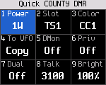

Esta página aún no está traducida; se muestra en inglés.
RadioFoundry User Manual
How to install RadioFoundry and use it on the radio. The chapters describe what RadioFoundry does on every radio. The
Radio reference lists what differs from radio to radio: the keys, power levels, battery, power switch
and display, and what has been checked on each. Each release also carries this manual as a PDF, built from these files
(tools/build_manual.sh, in file name order).
Start on the web site, radiofoundry.org: the web installer installs, updates, backs up and restores a radio, and the Codeplug Editor edits channels, zones and contacts. Both run in a Chromium browser. The chapters below name the command line tools as alternatives.



Reading order
Get started
- Introduction: what RadioFoundry is, project status, conventions
- Installing: the web installer first, then the advanced rfoundry command line; updating, backups, going back
- First boot: built-in channels, the first checks
- Programming the radio: the Codeplug Editor (P25 and NXDN channels, trunked systems), qdmr, RadioID contacts
Use the radio
- Keys and navigation: the five key rules, Find, temporary changes, key lock
- The Home screen: what each region shows, receiving, transmitting
- Channels, zones and the VFO: P25, P25 trunked and NXDN channels too
- FM: squelch, monitor, tones, bandwidth, VOX, touch tones
- DMR: talk targets, replying, Recent, contacts, timeslot and color code, privacy, roaming, trunked systems
- Messages, call alert and radio check
- Emergency
- Scan and dual watch
- APRS: positions on FM and over DMR, beacons, KISS and iGate with a computer
- Hotspot mode: MMDVMHost and Pi-Star, SFR, two radios as a duplex repeater
- USB network mode: IP over DMR, the status page, rig control, KISS, TFTP, SNMP, control station
- Battery and power
Reference
- Settings: every setting, its default and status
- Troubleshooting
- FAQ
- Glossary
- Radio reference: keys, power levels, battery, power switch, display, install values, programming and status of each radio
Moving from the stock firmware
These chapters are for a radio that still runs the manufacturer's firmware and has a codeplug worth keeping. One program installs RadioFoundry and carries the codeplug over. Without a chapter, install with the web installer and open its backup in the Codeplug Editor (Installing).
The Radio reference links the chapter from the radio's "Installing" section.
Quick reference
Keys are named by their job. Key roles shows which key does each job on your radio.
| To | Press |
|---|---|
| Change channel | Channel knob, or Up / Down |
| Change zone | Previous zone / Next zone, or OK, 4, pick a zone |
| Quick settings | * |
| Open the menu (hub) | OK |
| Act on the last caller | # |
| Recent calls | OK, 3 |
| Talk to another talkgroup or ID | Hold # |
| Choose who to talk to | Talk target (DMR), or *, 8 |
| Monitor | Hold Monitor |
| Dual watch on / off | Hold Talk target, or *, 7 |
| Scan on / off | OK, 6, 1 |
| Undo temporary changes | Back on Home |
| Save changes to the channel | Hold OK |
| Back to Home | Hold Back |
| Lock / unlock keys | Hold * |
Developers: see the developer documentation.